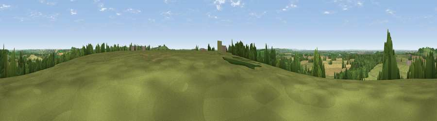

Viewpoint near Priors Marston
#26000 in England · top 33% of its area beats it · near Priors Marston · access?Where it is
The exact computed spot (SP 49475 58025). Click the marker for map links.
Public access: no public right of way or access land is recorded at this exact spot — it may be on private land. Computed from Natural England's CRoW access layer and OpenStreetMap rights of way — not the legal definitive map. Always verify locally.
The view, rendered

A 360° render of this exact spot computed from the terrain model, tree cover and land cover — summer colours, afternoon light, calibrated against photographs of famous viewpoints. Real trees, hedges and buildings will differ in detail.
The panorama
Grey silhouette: terrain skyline in each direction (720 bearings, Earth curvature and refraction included). Dashed green: skyline with trees (+15 m) and buildings (+8 m) as obstacles. Blue strip: how far the ground is visible on each bearing.
Where the view opens
Wedge length = distance to the farthest visible ground on that bearing (vegetation-aware). Rings at 10, 25 and 50 km.
What fills the view
57% grassland · 28% cropland · 13% woodland · 1% built-up
Angular shares of the visible panorama (visual magnitude), not map area. Landscape diversity 0.44 (0–1 Shannon).
Key numbers
More beautiful places nearby
The staircase of upgrades: each row has a higher view potential than everything closer. Driving times are estimates from straight-line distance, calibrated against real road routing — check an actual route before setting out.
| Place | Direction | Drive | Score |
|---|---|---|---|
| Viewpoint near Priors Marston | SSW · 0 km | ~1 min | 52.7 |
| Black Down | SE · 3 km | ~6 min | 64.5 |
| Big Hill - Staverton Clump | ENE · 6 km | ~13 min | 68.4 |
| Viewpoint near Northend | WSW · 11 km | ~21 min | 69.7 |
| Viewpoint near Northend | SW · 12 km | ~22 min | 70.3 |
| Viewpoint near Radway | SW · 15 km | ~26 min | 71.7 |
| Viewpoint near Ilmington | WSW · 33 km | ~50 min | 72.6 |
| Viewpoint near Meon Vale | WSW · 34 km | ~52 min | 77.0 |
52.21822, -1.27723 · source: screening · position refined by local search. Computed location — check access rights before visiting.